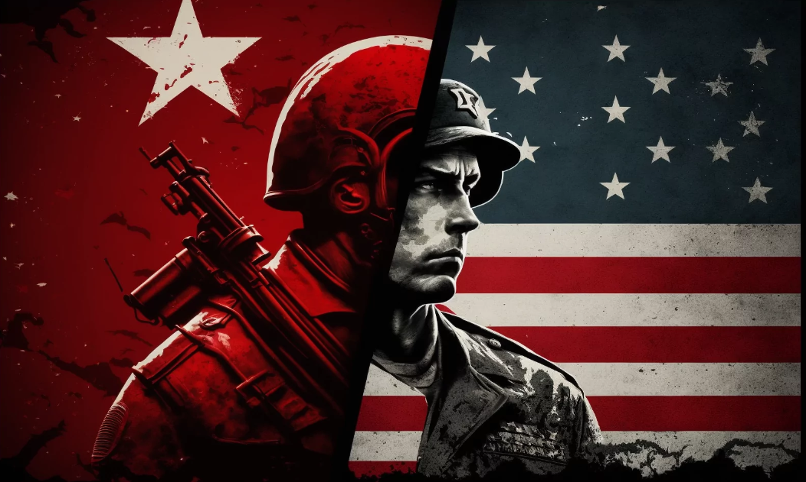

Guía didáctica "The Cold War Radio"
Guía didáctica
¿Qué es y para quién?

El siguiente proyecto recibe el nombre de “Cold War Radio” y busca trabajar algunos de los saberes básicos de la asignatura de Geografía e Historia en 4º curso de Educación Secundaria Obligatoria (ESO). Asimismo, también va a incluir la participación de la asignatura de Inglés, puesto que el producto final se realizará en este idioma, aunque el resto de actividades serán en español.
La secuencia didáctica diseñada, como se puede intuir del título, tiene como objetivo trabajar los contenidos y criterios relacionados con la Guerra Fría (1945-1991). De esta forma, se pretende que el alumnado conozca uno de los acontecimientos más relevantes del siglo XX que llevó a una intensa rivalidad entre la URSS y los Estados Unidos (EEUU) y que, a día de hoy, todavía tiene consecuencias. Así, no solamente conocen el pasado, sino que pueden entender el desarrollo de hechos que suceden a día de hoy como la Guerra entre Ucrania y Rusia o el antagonismo entre este último país y EEUU.
El desarrollo de las actividades se plantea para realizarse en unas 12 sesiones del tercer trimestre que se repartirán entre las materias implicadas. En ellas se realizarán una serie de actividades que permitan conocer las causas, desarrollo y consecuencias del conflicto, otorgándoles el conocimiento básico para crear el producto final. Este consiste en la creación de un pódcast o programa de radio, usando Audacity, en el que cada grupo analizará dos canciones que hacen referencia al período de la Guerra Fría, por lo que deberán buscar información sobre el contenido y crear una narración lógica y con sentido en inglés. La grabación se colgará en iVoox y será compartida mediante un código QR, que se incluirá en un póster realizado con Genially, con los miembros del centro educativo.
Siguiendo lo establecido en la normativa vigente, para diseñar el reto se ha partido de tres pilares fundamentales, que se considera que son necesarios dentro del curso de 4º de ESO: el trabajo cooperativo, el uso responsable de la tecnología y el impulso del inglés.
Para que exista un verdadero aprendizaje significativo de los contenidos, es fundamental que el docente abandone el papel central y ceda el protagonismo a los estudiantes. Es por ese motivo por el que se opta por el trabajo cooperativo mediante la realización del proyecto en grupos de cuatro alumnos. Ello permite desarrollar en el estudiantado actitudes y habilidades personales e interpersonales, que no solamente serán útiles dentro de su vida académica, también en su día a día.
En cuanto al uso responsable de la tecnología, se propone la introducción de una serie de herramientas digitales que, atendiendo al mundo tan globalizado que existe, son aquel elemento que puede ofrecer uno de esos cambios tan necesario en el centro educativo. Para el diseño de la secuencia didáctica se ha buscado que ésta tenga sentido y coherencia, que enriquezca el proceso de enseñanza-aprendizaje, permitiendo a los alumnos consolidar habilidades blandas como el trabajo en equipo, la comunicación interpersonal y la creatividad, entre otras. Cabe mencionar que para ello hemos tenido en cuenta dos factores: el nivel del alumnado en relación a las TIC y los recursos tecnológicos disponibles en el centro donde se va a poner en práctica. En este último caso, debemos mencionar que el centro cuenta con ordenadores portátiles para trabajar en el aula, pero valorando los problemas de conexión a Internet que tiene el instituto, se permitirá que el alumnado trabaje con sus propios dispositivos móviles.
Finalmente, el último pilar que sirve de base para este proyecto es la importancia de la lengua inglesa. La globalización ha convertido este idioma en la lengua oficial de políticas, tratados y negocios por lo que, para que las naciones se adapten a la cultura de la modernidad es clave que se logre el dominio del inglés.
Imagen: EducaHistoria